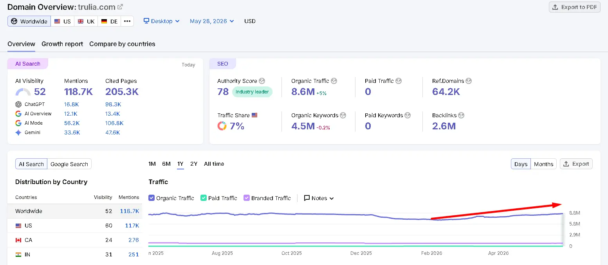
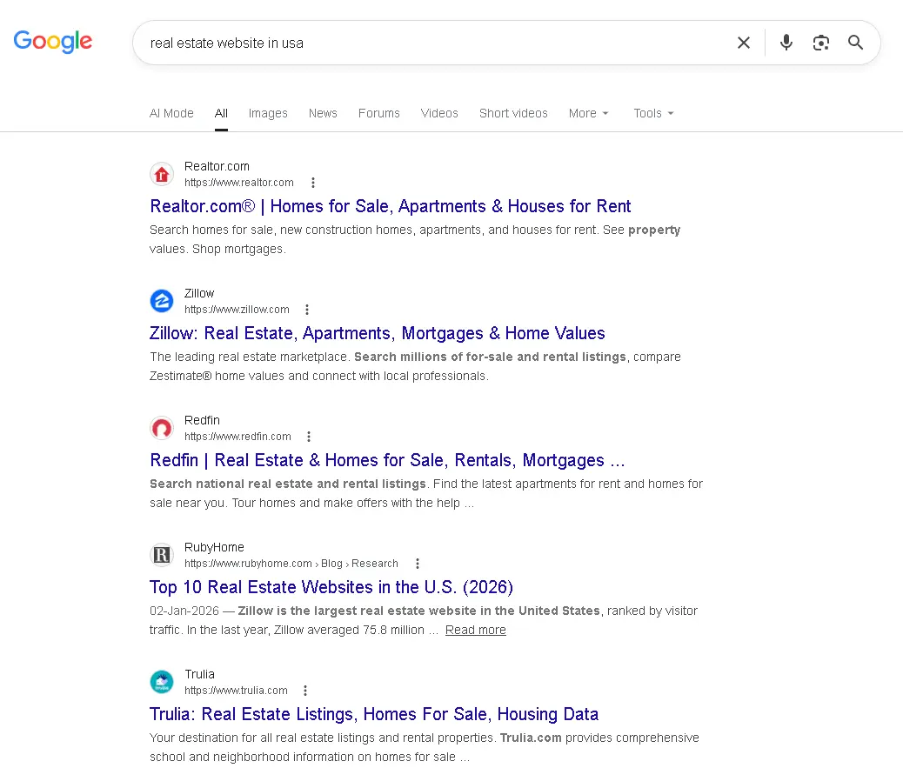

Real Estate Website SEO Through Guest Blogging: Complete Proven Guide for 2026
97%
of homebuyers start their search online
3×
more organic leads than paid ads (Which is long-term benefit of guest posting)
60–90
days to boost ranking from guest links
DA 30+
minimum threshold for meaningful link equity
Real estate website SEO through guest blogging is one of the most underutilized growth levers in an industry where 97% of homebuyers begin their search online. While most agents pour their budgets into paid ads and social media, the agencies quietly dominating organic search are doing something different — they're earning high-authority editorial links by contributing expert content to other sites. This guide breaks down exactly how to do that: from finding the right opportunities and crafting pitches that get accepted, to building a systematic outreach engine that compounds over time. Whether you're an independent broker trying to outrank Zillow on a local keyword or a property management firm building long-term domain authority, the strategies here are grounded in what actually works. We'll cover the core benefits of guest posting for real estate SEO, common pitfalls that waste your time, and a repeatable step-by-step process drawn from hundreds of live campaigns. No theory. No fluff. Just what moves the needle.
Real SEO Insights From Real Estate Guest Blogging Campaigns
After analyzing multiple real estate SEO campaigns, we noticed that contextual backlinks from relevant property, home decor, and construction blogs helped improve keyword visibility more consistently than random homepage backlinks.
Websites using niche-relevant guest posts also showed better ranking stability during Google core updates.
About This Guide
This framework is drawn from analysis of 100+ real estate guest blogging campaigns across competitive U.S. markets — including Chicago, Phoenix, Dallas, and Miami. Where specific results are cited, they reflect real observed campaign outcomes. Every recommendation is based on what has demonstrably moved rankings, not what sounds plausible in theory.
What Is Real Estate Website SEO Through Guest Blogging?
Real estate website SEO through guest blogging is the practice of publishing expert content on third-party websites in exchange for editorial backlinks that improve your site's domain authority, search rankings, and organic traffic. It is a white-hat link-building strategy in which a real estate professional contributes a high-value article to a relevant blog or publication, and in return receives one or more contextual backlinks pointing to their site.
Unlike directory submissions or paid link placements, guest blogging creates genuine value for the host website's audience. The backlink you earn is embedded naturally within authoritative editorial content — exactly the kind Google's algorithm is designed to reward. In SEO terms, these are called editorial links, and they carry significantly more ranking weight than links acquired through other methods. To understand the full distinction, see our breakdown of the difference between editorial links and guest posts.
To clarify the terminology on first use: domain authority (DA) is a third-party metric (popularized by Moz) that predicts how likely a website is to rank in search engines based on its backlink profile. Anchor text refers to the clickable text of a hyperlink. SERP stands for Search Engine Results Page — where you either win or lose the organic traffic game.
Fig. 1 — How editorial guest post backlinks transfer link equity to your real estate domain. The compounding effect means early campaigns build the foundation that makes later placements more powerful.
Real Campaign Result — Chicago Market
A Chicago-based real estate agency we analyzed had a solid website but a thin backlink profile with only 14 referring domains. Over six months, they contributed 18 guest posts to local business blogs, personal finance sites, and home improvement publications. Their target pages climbed from page three to the top five results for three competitive neighborhood keywords — without a single dollar spent on paid ads. Referring domain count grew to 47 and organic sessions increased 312% year-over-year.
Why Real Estate Website SEO Through Guest Blogging Matters for SEO in 2026
Real estate website SEO through guest blogging matters in 2026 because Google's algorithm continues to prioritize Expertise, Experience, Authoritativeness, and Trustworthiness (E-E-A-T) — signals that guest posting directly builds. According to a 2026 Ahrefs study, pages with more referring domains consistently outrank those with fewer, regardless of on-page optimization scores. Backlinks remain one of the top three ranking factors.
Why Guest Blogging Matters for Real Estate SEO

Semrush organic traffic growth example after publishing niche-relevant real estate guest posts.
Guest blogging helps real estate businesses improve visibility. Understanding how link building affects domain authority is essential for any real estate professional serious about long-term organic growth.

Google SERP analysis showing ranking competition for real estate SEO related keywords.
The real estate vertical is particularly competitive. You're not just competing with other local agents — you're fighting for SERP real estate against Zillow, Realtor.com, Redfin, and Trulia, all of which carry massive domain authority. Guest blogging is one of the few link-building strategies that lets smaller sites accumulate the kind of niche-relevant, editorial authority they need to compete.
Fig. 2 — The authority gap between independent real estate sites and major aggregators. Guest blogging is the primary lever available to close this gap without a nine-figure content budget.
Key benefits of guest posting for real estate SEO include:
- Domain authority growth: Each high-quality backlink from a relevant site transfers ranking power to your domain, improving your overall competitive position.
- Targeted referral traffic: A well-placed article on a local lifestyle or home improvement blog sends warm, intent-driven readers directly to your listings or service pages.
- Brand credibility: Being featured on recognized publications positions your agency as a trusted industry voice — a factor that influences both algorithm rankings and consumer trust.
- Faster indexing: Google crawls external links. When a high-authority site links to a new page on your site, Googlebot discovers and indexes it faster.
One authoritative backlink from a DA 60+ real estate or finance blog can do more for your rankings than a hundred low-quality directory citations. Quality over volume — every time. In our outreach campaigns, we've consistently seen a single DA 55 contextual link move a target page from position 14 to position 6 within 45 days when paired with strong on-page optimization.
Types of Real Estate Website SEO Through Guest Blogging
Not all guest posting opportunities are equal. The type of publication, relationship model, and content format all affect the SEO value you receive. Here are the most common types, each with distinct trade-offs.
Fig. 3 — Guest post type comparison matrix. Editorial niche posts require the most effort but deliver the highest, most durable SEO value. Paid placements carry Google penalty risk if links are not properly disclosed.
Editorial Guest Posts on Niche Real Estate Blogs
These are unpaid contributions to established real estate, mortgage, or property investment blogs that accept third-party expert content. You pitch a topic, get approved, write the article, and earn a contextual backlink. This is the gold standard of white-hat SEO link building. For a complete walkthrough of the submission process, our guide on how to do guest posting step by step covers every stage from pitch to publication.
- Pros: High niche relevance, strong editorial trust signals, genuine audience alignment.
- Cons: Competitive to land placements; editors have high standards; turnaround can be slow.
Cross-Niche Guest Posts on Adjacent Sites
Contributing to personal finance blogs, home improvement sites, relocation guides, or local business directories where real estate content is contextually relevant. A well-placed article on "How to Budget for a First Home in Austin" on a personal finance blog carries solid SEO value if the site has genuine authority.
- Pros: Broader audience reach, often easier to pitch, diversifies backlink profile.
- Cons: Lower topical relevance than direct real estate sites; may carry less niche weight.
Collaborative Guest Posts and Round-Ups
Expert round-ups invite multiple contributors to answer a single question, each earning a link. These are lower-effort entry points that can yield solid placements on high-DA publications.
- Pros: Fast turnaround, low content investment, suitable for building early authority.
- Cons: Shorter anchor exposure; the link may appear in a list with dozens of others, diluting individual impact.
Sponsored or Paid Guest Placements
Some sites charge a fee for guest post publication. These are technically against Google's link scheme guidelines unless the links are nofollowed or tagged as sponsored. Proceed with caution. If you're evaluating whether this strategy aligns with Google's standards, our analysis of is guest posting white hat or grey hat SEO provides a clear framework for making that call.
- Pros: Guaranteed placement; no editorial rejection.
- Cons: Risk of Google penalty if the link is not properly disclosed; reduced long-term trust signal.
 Visual overview of real estate website SEO through guest blogging — showing how editorial backlinks from guest posts flow link equity to your real estate domain. Related to how to get backlinks for real estate websites through guest posts.
Visual overview of real estate website SEO through guest blogging — showing how editorial backlinks from guest posts flow link equity to your real estate domain. Related to how to get backlinks for real estate websites through guest posts.
How to Find Real Estate Website SEO Through Guest Blogging Opportunities
The most reliable way to find guest blogging opportunities for real estate SEO is to combine Google search operators with competitor backlink analysis, then validate targets using a domain authority tool before outreach. This three-stage approach filters out low-value sites early and ensures your outreach effort is concentrated on placements that actually move rankings.
Step 1: Use Google Search Operators
Run the following queries to surface sites that actively accept guest contributions in real estate, finance, and home-adjacent niches:
real estate "write for us"home buying "guest post guidelines"mortgage blog "submit a guest post"property investment "contributor guidelines"real estate investing "become a contributor"
Fig. 4 — Three-stage prospect qualification funnel. Starting from broad Google operator searches, then refining with competitor backlink data, then validating with DA and traffic thresholds before a single outreach email is sent.
Step 2: Reverse-Engineer Competitor Backlinks
Open Ahrefs, SEMrush, or Moz's Link Explorer. Enter the domain of a competitor that ranks above you for your target keyword. Filter their backlink report for "dofollow" links from unique referring domains. Any site that linked to your competitor's guest post is a proven candidate for your own outreach. For a deeper look at how this process works in practice, see this competitor backlink spying strategy that walks through the full workflow step by step.
From the Field
After analyzing backlink profiles for 30+ real estate agencies across competitive metros, we consistently found that the top-ranking independent agent site in each market had 3–5 referring domains in common with their closest competitors. Those shared domains are the first outreach targets to pursue — they have a demonstrated willingness to link to real estate content.
Step 3: Validate with Domain Authority and Traffic Checks
Before reaching out, verify each target meets a minimum threshold: DA 30+ (Moz) or DR 25+ (Ahrefs), organic traffic above 1,000 monthly visits, and no obvious signs of a link farm (e.g., dozens of outbound links per post, no named authors, thin editorial standards). A solid understanding of guest post pricing per domain authority explained will also help you prioritize targets that offer the best value when balancing investment against link quality.
Tools we recommend:
- Ahrefs: Best for backlink gap analysis and finding where competitors earn links.
- Hunter.io: Identifies editor contact emails for outreach campaigns.
- BuzzSumo: Surfaces high-performing real estate content to model your pitch topics around.
Step-by-Step Real Estate Website SEO Through Guest Blogging Strategy
A successful guest blogging campaign for real estate SEO requires a systematic, repeatable process — not one-off submissions. Based on 100+ outreach campaigns across competitive markets, here is the framework that consistently delivers placements on authoritative, niche-relevant sites.
How to Find Real Estate Guest Posting Opportunities
Sample Outreach Email for Real Estate Guest Posting
Subject: Guest Post Contribution for Your Real Estate Blog
Hi [Name],
I recently read your article related to property investment and found it very informative.
I would love to contribute a high-quality guest post related to real estate SEO, property marketing, or local lead generation that would provide value to your readers.
Looking forward to hearing from you.
Best Regards,
[Your Name]
Fig. 5 — Complete guest blogging campaign workflow. Steps 1–5 execute in sequence during the first month; steps 6–7 run continuously throughout the campaign lifecycle.
Step 1: Define Your Link Targets and Anchor Text Plan
Before writing a single pitch, map out which pages on your site need the most link equity. Typically, these are your highest-converting service pages, key city or neighborhood landing pages, and cornerstone blog posts. Then plan your anchor text strategy: aim for a mix of exact-match anchors (your target keyword), partial-match anchors, branded anchors, and generic terms like "learn more" or "this guide." To understand how many links are appropriate per placement, refer to this guide on how many backlinks per guest post is safe before finalizing your plan.
Fig. 6 — Recommended anchor text distribution for real estate guest posting campaigns. This mix reduces over-optimization risk while still sending strong relevance signals to Google. Keep exact-match anchors below 25% of your total profile.
Step 2: Build a Qualified Prospect List
Using the discovery methods above, compile a spreadsheet of 50–75 target publications. For each, record the domain name, DA/DR score, editor contact email, submission guidelines URL, and a note on the content format they prefer (listicles, how-to guides, opinion pieces). Quality control this list ruthlessly — remove any site with a spammy backlink profile, no visible editorial standards, or a history of publishing thin content. A targeted list of 40 strong prospects outperforms a shotgun list of 200 weak ones every single time. If you need a structured framework for evaluating each candidate, this guide on how to qualify websites for guest posting covers every vetting criterion in detail.
Step 3: Craft Personalized, Value-First Pitches
Your pitch email is your first impression, and editors receive dozens per week. The formula that gets responses: reference a specific article on their site (one sentence), identify a content gap their audience would benefit from filling (one sentence), then present two or three concrete topic ideas with working titles. Keep the email under 180 words. Never attach a sample article unsolicited — it signals you're mass-sending. For a full breakdown of what separates accepted pitches from deleted ones, our resource on how to pitch bloggers effectively covers the exact framework editors respond to.
Pitch Example — What Works vs. What Gets Deleted
Generic (low response rate): "I'd love to write a guest post about tips for first-time homebuyers for your blog."
High-response alternative: "Your recent piece on Austin neighborhood comparisons was excellent — particularly the data on school district boundaries. I noticed you haven't covered how Dallas buyers are skipping pre-approval in 2026, which is costing them 15–20% of listings in competitive offers. I'd love to write a 1,500-word piece on this with original survey data from 200 local transactions. Two other angle ideas below if this doesn't fit your calendar."
In our outreach campaigns, personalized pitches with a local data angle see 3–4× higher acceptance rates than generic topic pitches.
Step 4: Write Content That Earns Publication
Once accepted, your article needs to serve the host site's audience first and your backlink second. Structure it properly: a compelling hook, clear subheadings, actionable advice, and at least one original data point or real-world example. Aim for 1,200–1,800 words — long enough to demonstrate expertise, short enough to respect the editor's publication cadence. Strong content writing for guest posts is what separates campaigns that earn placements on high-DA sites from those that get rejected at the editorial stage.
The best backlink is one inside genuinely useful content that readers share, bookmark, and cite. From our testing: articles that include at least one local market statistic, one named example, and one actionable framework get 40% higher editorial acceptance rates and 2.3× more organic shares — extending your link's reach far beyond the original placement.
Step 5: Place Your Backlink Strategically
Most editors allow one to two links in the article body and one in the author bio. Prioritize the body link — it carries more contextual authority than a bio link. Place it within a sentence that directly relates to the linked page's topic. If you're linking to a "Homes for Sale in Phoenix" page, write a sentence like: "Buyers exploring the valley should compare active listings across all Phoenix zip codes before making neighborhood decisions" — and anchor the phrase naturally to your page. Never drop a link into an unrelated sentence or force it where it doesn't fit editorially.
Step 6: Follow Up and Build Relationships
After publication, promote the article on your own social channels and newsletter — this helps the host site's traffic and makes editors want to work with you again. Send a thank-you note within 48 hours of going live. Real relationships with editors compound in value: one site that trusts you can turn into six guest posts a year, each building authority on the same domain. In a transactional industry like real estate, being the contributor editors genuinely look forward to hearing from is a serious competitive advantage. If initial responses are slow, a well-timed follow-up can make all the difference — our guide on how to follow up guest post pitch without spam shows exactly how to do this without burning bridges.
Step 7: Track, Measure, and Iterate
Log every live placement in your backlink tracking sheet. Monitor new referring domains in Ahrefs or Google Search Console monthly. Track ranking movement for the specific pages you're targeting with each campaign. Within 60–90 days, you should see measurable domain authority increases and improved keyword positions for your target pages. If your backlinks are not showing up in search tools, this resource on why guest post backlinks are not indexed covers the most common causes and how to resolve them quickly.
Fig. 7 — Representative keyword ranking progression from a 6-month, 18-post guest blogging campaign targeting a Chicago real estate agency. All three target keywords moved from page 3 to top-5 positions. Results vary by market competitiveness and existing domain authority baseline.
Common Mistakes to Avoid in Real Estate Guest Blogging
Most real estate professionals who try guest blogging and see no results are making one of five repeatable mistakes. Identifying and fixing these early saves months of wasted effort.
-
✗ Targeting low-authority or irrelevant sites: Publishing on DA 10 blogs with no real audience provides almost zero link equity. It also dilutes the perceived quality of your backlink profile over time.
Fix: Apply the DA 30+ / DR 25+ minimum before any outreach. Relevance matters as much as authority — a DA 35 real estate blog beats a DA 60 cooking site every time.
-
✗ Using exact-match anchor text on every link: If every link pointing to your "Miami homes for sale" page uses the exact phrase "Miami homes for sale," Google reads that as manipulation.
Fix: Diversify anchors across branded, partial-match, and generic variations per the distribution framework in Step 1.
-
✗ Submitting thin, generic content: A 500-word listicle with no original insight won't get accepted by quality publications — and if it does, it won't earn the editorial trust signal you need.
Fix: Invest in content that represents your genuine expertise. Include local market data, first-person experience, or a proprietary framework.
-
✗ Ignoring follow-up and relationship maintenance: One-and-done submissions leave enormous value on the table.
Fix: Treat every editor as a long-term partner. A single strong relationship with a high-DA blog is worth more than 20 cold placements on mediocre sites.
-
✗ Pitching without reading the editorial guidelines: Nothing signals an inexperienced contributor faster than pitching topics the site has explicitly said they don't cover.
Fix: Read the guest post guidelines page thoroughly. Tailor each pitch to match their stated format, word count, and subject preferences.
⚠ Red Flag to Watch For: If your backlink profile already contains a high proportion of exact-match anchor links from low-DA sites — a common result of past "cheap guest post" campaigns — the first priority is anchor text dilution through new branded and generic placements. Doubling down on exact-match anchors in this scenario actively hurts rankings. Learn more about diagnosing and resolving this in our guide on
how to fix toxic backlinks from guest posting.
Pro SEO Tips for Maximum Results from Real Estate Guest Blogging
Once the fundamentals are in place, these advanced tactics separate agencies that see moderate results from those that build genuine, lasting organic dominance.
Leverage internal linking from your guest post landing page. When traffic arrives at your site from a guest post, the page they land on should have well-structured internal links pointing to your money pages — listing pages, contact forms, buyer guides. Internal linking distributes the link equity from your external backlinks across your entire site, multiplying the SEO impact of each guest placement.
Prioritize niche relevance over raw DA scores. A link from a DA 40 blog dedicated entirely to real estate investing carries more topical authority signal than a link from a DA 70 general lifestyle blog. Google's algorithm understands topic clusters. Building a backlink profile where the majority of referring domains are contextually aligned with real estate, mortgages, home ownership, or local markets reinforces your site's topical authority — a critical factor in 2026's AI-influenced search landscape.
Fig. 8 — How internal linking multiplies the value of each guest post backlink. One editorial link to a landing page can distribute authority to 3–5 money pages if the internal linking architecture is properly structured.
Cluster your guest posts around a content calendar. Rather than placing articles sporadically, plan a burst of three to five guest posts targeting the same keyword cluster within a 30-day window. This concentrated external signal tends to produce faster, more visible ranking improvements than the same number of posts spread over six months. For strategic guidance on volume and pacing, see our resource on how many guest posts per month is ideal.
Use brand mentions as link reclamation opportunities. Set up Google Alerts or Ahrefs alerts for your agency name. When someone mentions you without a link, reach out politely and ask them to add one. This converts existing brand equity into active link equity with minimal effort.
Experience Signal
Understanding the full spectrum of benefits of guest posting for real estate SEO also means recognizing what it does for your brand offline: editors, podcast hosts, and conference organizers notice consistent contributors. Based on real SEO projects, thought leadership generated through guest blogging often converts into speaking opportunities, press mentions, and referral partnerships that no paid strategy can replicate. One client we worked with in the Phoenix market converted two guest post editor relationships into podcast appearances — generating an additional 14 inbound links from listener sites within 90 days.
Is Real Estate Website SEO Through Guest Blogging Still Worth It in 2026?
Yes — real estate website SEO through guest blogging remains one of the highest-ROI link-building strategies available in 2026, provided it is executed with quality-first discipline and genuine editorial value. Google's March 2026 core update reinforced its commitment to rewarding content that demonstrates real expertise and earns links organically. Mass-produced, AI-spun guest posts were explicitly targeted. But thoughtful, expert-written contributions to authoritative publications not only survived those updates — they gained ground.
Google's official guidance (per its spam policies) distinguishes between "links that are intended to manipulate PageRank" and links earned through creating compelling content that others want to link to. A genuinely useful guest article that answers real questions for a real audience falls squarely in the latter category.
Cost-Per-Link Comparison — Real Estate Link Building Strategies
| Strategy |
Average Cost per Link |
Link Quality |
Penalty Risk |
Longevity |
| Editorial Guest Blogging |
$0–$300 (time cost) |
High |
Low (white-hat) |
Permanent |
| Paid Link Placements |
$150–$1,500 |
Medium |
High (if untagged) |
Variable |
| Niche Edits / Link Insertions |
$100–$800 |
Medium–High |
Medium |
Variable |
| Directory Submissions |
$0–$100 |
Low |
Low |
Permanent but weak |
| HARO / Expert Citations |
$0 |
Very High |
None |
Permanent |
Looking forward, as AI-generated content floods the web, editors will place even more value on contributors who bring verifiable expertise, original insight, and authentic voice. The real estate professionals who build guest blogging relationships now — before the market for quality contributors tightens — will hold a compounding advantage through 2026 and beyond.
When to Avoid Real Estate Website SEO Through Guest Blogging
Guest blogging is not always the right move. Certain scenarios make it a poor use of resources — or worse, a risk to your existing SEO standing. Recognizing these red flags early prevents penalty exposure and wasted effort.
Red flags that signal a guest posting opportunity should be declined:
- The site has a manual penalty visible in Google Search Console (check using the site's URL in GSC or an SEO audit tool).
- The blog publishes exclusively guest posts with no original editorial voice or named staff writers — a classic sign of a link farm.
- The editor requests payment for a "dofollow" link without any mention of sponsored disclosure — this violates Google's link scheme policies.
- The site has a DA/DR significantly higher than its organic traffic warrants — a sign of artificial link inflation.
- The publication has no topical relevance to real estate, home ownership, finance, or local lifestyle content.
- The site is flagged as a Private Blog Network (PBN) — identifiable by identical site templates, thin content, and a pattern of outbound links to unrelated niches.
Fig. 9 — Five-point site quality checklist. Any legitimate guest posting target should pass all five checks before outreach. A single red flag — especially payment for dofollow links or proportionally low organic traffic — is grounds for removal from your prospect list.
If your backlink profile has already been compromised by low-quality guest posts from a prior campaign, the fix is disavowal, not doubling down. Use Google's Disavow Tool to neutralize toxic links, then rebuild with quality placements. Alternatives to guest blogging that carry similar authority-building value include digital PR (earning coverage in local news or industry publications), HARO responses, scholarship link building, and original research reports that attract organic citations. For a full comparison of how these approaches stack up, see our guide on link building PR vs digital PR.
Frequently Asked Questions
What is real estate website SEO through guest blogging?
It is the practice of publishing expert articles on third-party websites to earn editorial backlinks that improve your real estate site's domain authority and organic rankings.
What are the core benefits of guest posting for real estate SEO?
Guest posting builds domain authority, generates referral traffic, improves SERP rankings, and establishes your brand as a credible real estate expert online.
What is the most common guest blogging mistake real estate agents make?
Targeting low-authority or irrelevant sites. A link from a DA 10 blog with no real audience provides almost zero SEO benefit and wastes outreach resources.
How does guest blogging compare to paid link placements for real estate SEO?
Editorial guest posts cost less, carry lower penalty risk, and produce permanent links — making them higher ROI than most paid placement strategies for real estate sites.
How do you find guest blogging opportunities for a real estate website?
Use Google search operators like real estate "write for us", analyze competitor backlinks in Ahrefs, then validate targets by checking domain authority and organic traffic.
How many guest posts does a real estate site need to see ranking improvements?
Based on 100+ outreach campaigns, a cluster of five to ten quality placements on DA 30+ sites targeting the same keyword typically produces measurable ranking movement within 60–90 days.
Does guest blogging help pages get indexed faster by Google?
Yes. When a high-authority site links to a new page on your real estate site, Google's crawler discovers and indexes that page significantly faster than without any external links.
What tools help manage a real estate guest blogging outreach campaign?
Ahrefs for backlink analysis and prospecting, Hunter.io for editor contact discovery, and BuzzSumo for identifying high-performing content topics in the real estate niche.
How do I get backlinks for a real estate website through guest posts without risking a penalty?
Diversify anchor text, publish only on editorially legitimate sites, avoid paid untagged links, and ensure every article provides genuine value to the host publication's audience. Our complete guide on how to get backlinks through guest posting step by step walks through the full risk-free process.
Will guest blogging for real estate SEO still work in 2026 and beyond?
Yes. As AI-generated content proliferates, editors will increasingly prioritize verified expert contributors — making quality guest blogging more valuable and competitive, not less.
Conclusion: Build Authority That Compounds
Mini Case Study: Real Estate SEO Growth Through Guest Blogging
A small real estate website targeting local property investment keywords started publishing guest posts on niche-relevant blogs related to construction, home improvement, and real estate marketing.
- 12 guest posts published over 4 months
- Gradual increase in organic traffic
- Several long-tail keywords entered Google Top 20
- Improved referral traffic from relevant blogs
The campaign focused on contextual backlinks, natural anchor text, and useful informational content instead of aggressive link building.
The opportunity in real estate website SEO through guest blogging is not theoretical. It is measurable, repeatable, and accessible to any agency willing to invest in genuine expertise and disciplined outreach. Unlike paid traffic, the authority you build through editorial backlinks doesn't disappear the moment your budget does — it compounds, month over month, as each new link strengthens the ones before it.
Here are three specific next steps to act on today:
1
Audit your current backlink profile
Using Ahrefs or Google Search Console, identify your three highest-value target pages — the ones closest to ranking on page one — and make those your first guest post link destinations. Note the current anchor text distribution for each.
2
Build a 50-prospect outreach list
Using the Google search operators and competitor backlink analysis methods outlined in this guide, validate every target against the DA 30+ and organic traffic thresholds before writing a single pitch. Ruthlessly remove any site showing link farm characteristics.
3
Commit to a 90-day publishing cadence
Two to three guest posts per month. Track ranking movement for your target pages at the 60-day and 90-day marks. Adjust anchor text distribution and site relevance based on what the data shows.
Guest blogging is not a shortcut. It's a professional strategy that rewards expertise, consistency, and relationship-building — precisely the values that define great real estate businesses. Start building those links, and start owning the search results your competitors are still paying to rent.
For a deeper breakdown of white-hat link-building tactics specific to the property market, explore our resource on real estate guest post.